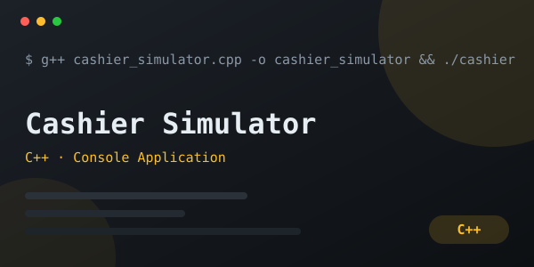
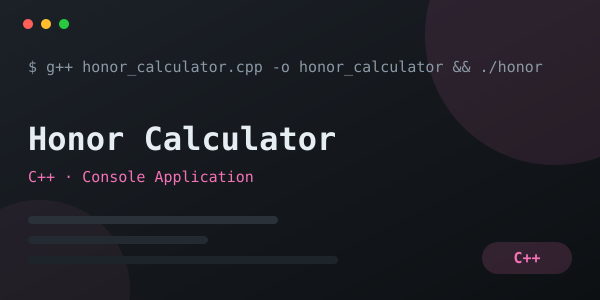
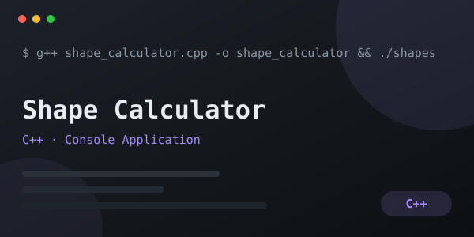
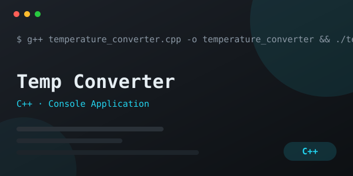
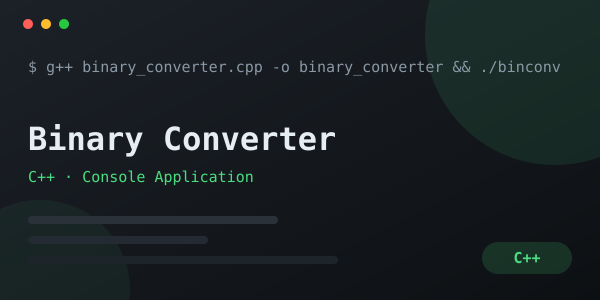
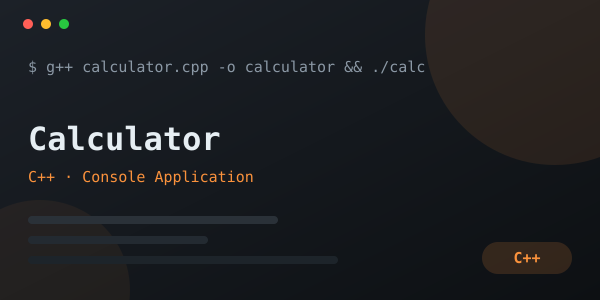

Scholog — Student & Attendance Tracker
Installable web app for teachers: manage sections and rosters, take daily attendance, export PDF reports, and let students check in with a QR code or Student ID — with offline sync.
everything i've shipped so far — a live attendance web app and a collection of C++ console applications. every card links to the live app or the full source code.
Installable web app for teachers: manage sections and rosters, take daily attendance, export PDF reports, and let students check in with a QR code or Student ID — with offline sync.

Console-based ATM with card and PIN verification, balance checking, deposits, withdrawals, and transaction history.

Add student records, input grades, check pass or fail status, and display all student information.

Console-based cashier program with tax and change calculation.

Averages two semester grades and determines the honor status — Highest Honor, High Honor, Honor, Excellent, or Needs Improvement.

Choose a shape and calculate its area, perimeter, or volume from the dimensions you enter.

Converts temperatures between Celsius and Fahrenheit based on user selection.

Converts numbers between decimal, binary, hexadecimal, and octal — and even text strings into binary.

Four-operation calculator (+, −, ×, ÷) built with clean switch-case logic.